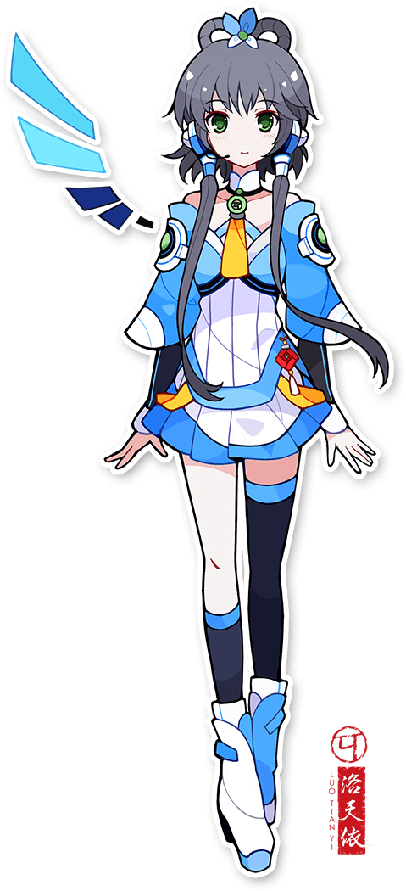
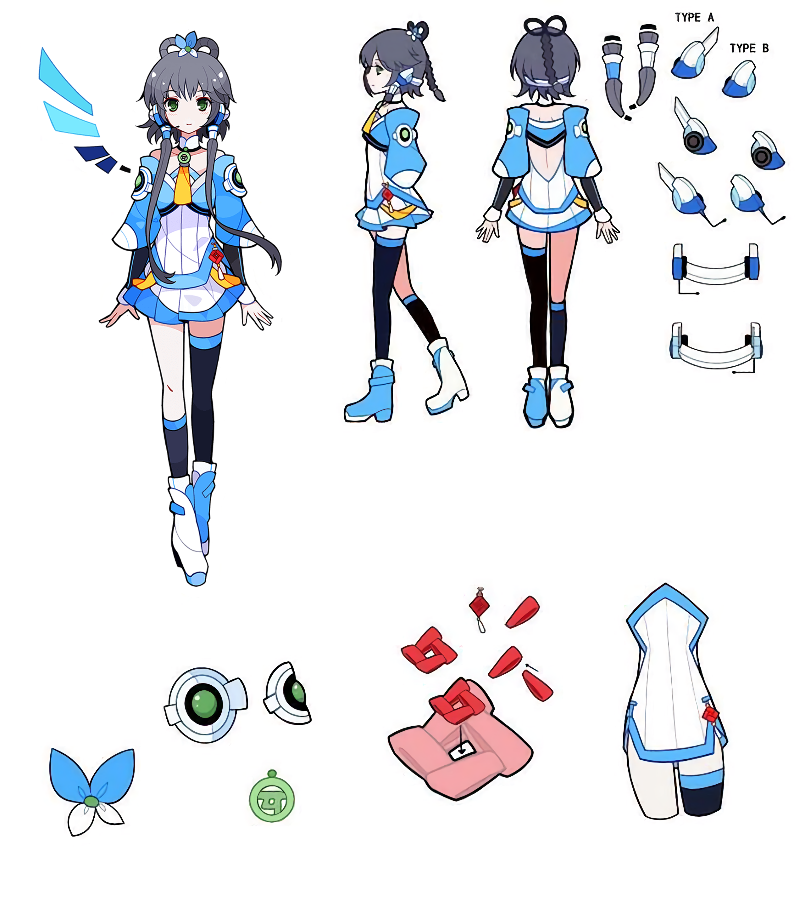
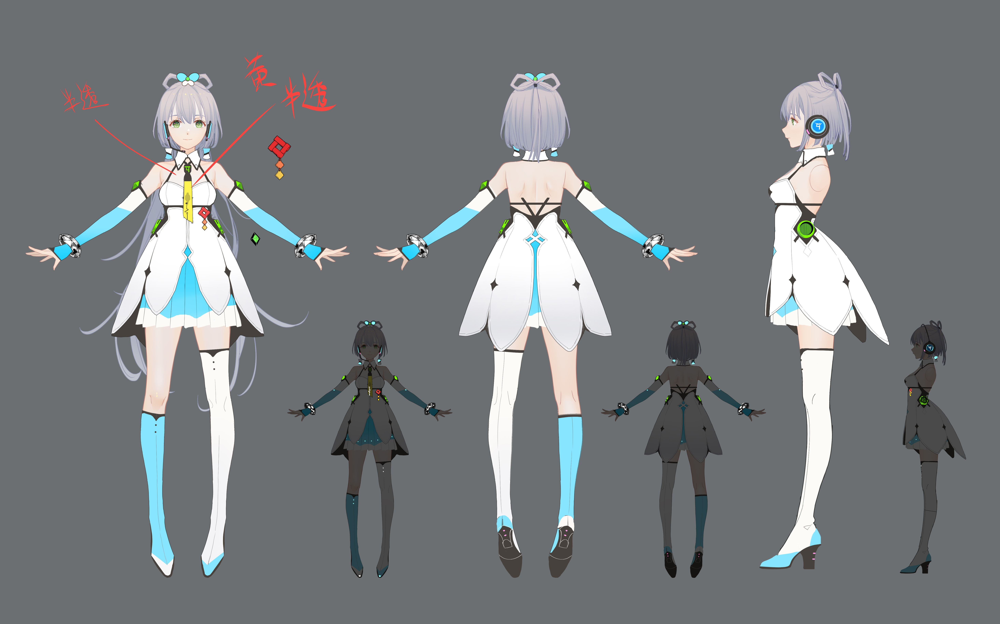

// 虚拟歌手 · VOCALOID · 洛水天依// China's First Virtual Singer · VOCALOID
洛天依 Luo Tianyi
「让世界充满歌声」 "Fill the world with song"

角色档案Character Profile
// 基本信息 · 外观特征 · 性格技能// Basic Info · Appearance · Skills
| ├─ 🎂 | 生日Birthday | 7月12日 / July 12 |
| ├─ ♋ | 星座Zodiac | 巨蟹座Cancer |
| ├─ 📏 | 身高Height | 156 cm |
| ├─ 🔢 | 年龄Age | 15 |
| ├─ 👁 | 瞳色Eye Color | 绿色Green |
| ├─ 💇 | 发色Hair Color | 灰发Grey |
| ├─ 🎤 | 声源(中)Voice (CN) | 山新 Shan Xin |
| ├─ 🎤 | 声源(日)Voice (JP) | 鹿乃 Kano |
| ├─ 🎨 | 设计师Design | ideolo (原案:MOTH) |
| ├─ 🏢 | 开发商Developer | 上海禾念Shanghai Henian |
| ├─ 💙 | 象征色Sig. Color | #66CCFF |
| └─ ✨ | 特技Skill | 共鸣Resonate |

「她能感知你心中最强烈的情感，化作旋律唱出，哪怕你自己无法开口。」
"She senses your heart's strongest emotion and transforms it into melody — even if you cannot speak it yourself."
世界观与背景故事Lore & Story
能够敏锐地感受到他人感情，有点内向的少女。在某日突然获得了召唤，并且带着某个重要的任务，作为新的VOCALOID™来到了人类的世界。
A somewhat introverted girl who is highly sensitive to the emotions of others. One day, she was suddenly summoned and arrived in the human world as a new VOCALOID™ with an important mission.
对过去曾经在人类世界创造了历史的传说中的VOCALOID™前辈们非常憧憬，也梦想着自己有朝一日能够成为用歌声为别人传递感动与幸福的歌姬。
She deeply admires the legendary VOCALOID™ seniors who made history in the human world, dreaming that she too will one day become a songstress who delivers emotions and happiness through her voice.
因为初到人类世界，完全不懂人类语言，只能通过歌唱来表达感情。她拥有能为别人流泪的温柔，以及无论经历多少挫折也绝不放弃的坚强。
Having just arrived in the human world and not knowing the language, she can only express her feelings through song. She possesses a gentleness that weeps for others and a strength that never gives up in the face of setbacks.
音乐世界Music World

成长历程Milestones
以 VOCALOID3 引擎首次发布，成为首位中文商业 VOCALOID。由上海禾念与 Yamaha Bplats 联合开发，荣获「VOCALOID™ CHINA」大赛冠军。First released on VOCALOID3, becoming China's first commercial VOCALOID. Developed by Shanghai Henian & Yamaha Bplats. Grand winner of the VOCALOID™ CHINA contest.
升级至 V4 引擎，新增「萌」「宁」两款中文声库。音质与表现力大幅提升。Upgraded to V4 with "Meng" and "Ning" Chinese voicebanks. Greatly improved vocal quality and expressiveness.
发布 Normal 和 Sweet 日语声库，由山新与日本歌手鹿乃 (Kano) 协同演绎。Released Japanese "Normal" and "Sweet" voicebanks, co-created by Shan Xin and Japanese utaite Kano.
在上海奔驰文化中心与著名钢琴家郎朗同台演出，引发广泛关注。担任共青团青年大使。Performed at Shanghai's Mercedes-Benz Arena with world-renowned pianist Lang Lang. Served as a Youth Ambassador for the Chinese Communist Youth League.
正式升级至 VOCALOID5 引擎，推出 AI 声源技术，支持 ACE Virtual Singer 及 X Studio 平台，迈入新时代。Upgraded to VOCALOID5 with AI voicebank tech, supporting ACE Virtual Singer and X Studio — entering a new era.
洛天依仍是中国最具影响力的虚拟歌手，深受全球粉丝喜爱，用歌声连结每一颗心。Luo Tianyi remains China's most influential virtual singer, cherished by fans worldwide, connecting every heart through song.